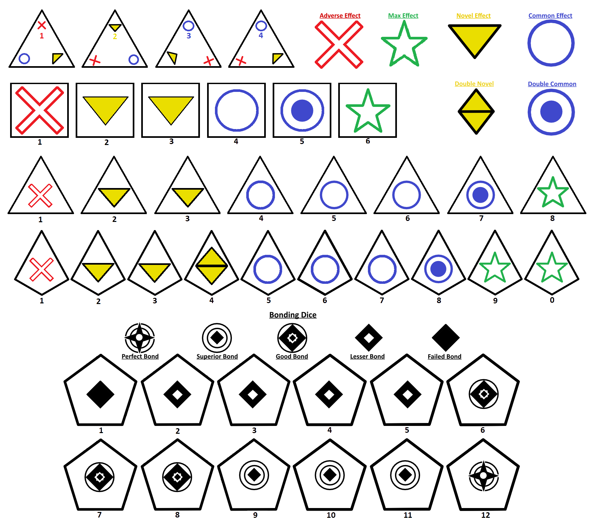

Narrative
Campaign play
A continuing adventure spanning multiple sessions, locations, conflicts, relationships, discoveries, and major turning points.
Ways to play
Run a long campaign, stage a focused scenario, or meet across the battlefield for a fast tactical clash.
The main experience
One player serves as Game Master, presenting the world, its people, threats, mysteries, and consequences. The other players create Archivists who work cooperatively to overcome obstacles and shape the story.
Roleplay actions use d20-based World Obstacle checks, while Chronikin combat uses a distinct symbol-driven dice system.
Narrative
A continuing adventure spanning multiple sessions, locations, conflicts, relationships, discoveries, and major turning points.
Quick Play
A shorter GM-led experience built around two or three engagements, a clear premise, and a satisfying session-sized arc.
Direct tactical combat
Skirmish strips away the longer campaign structure and puts players directly into strategic combat. It is ideal for quick sessions, competitive play, demonstrations, and players who want to learn the battle system before beginning a campaign.
Find Skirmish ResourcesThe dice
Chronikin action dice use four major result symbols: Common, Novel, Max, and Adverse. These results determine damage, movement, support, complications, and special effects.
